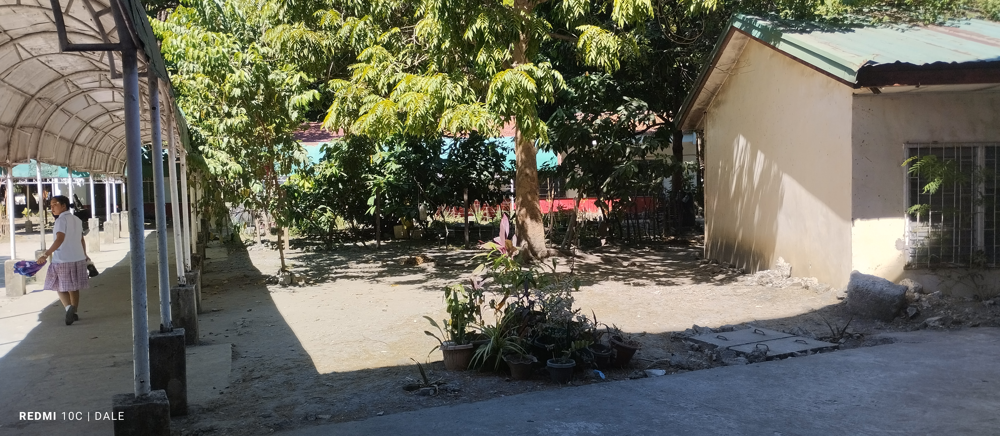
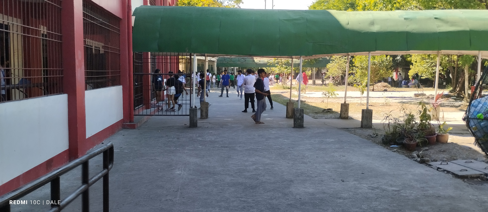
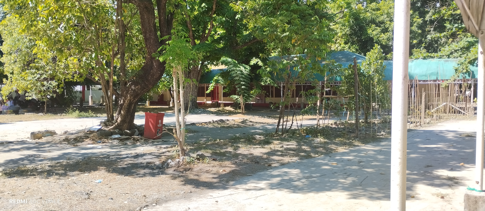
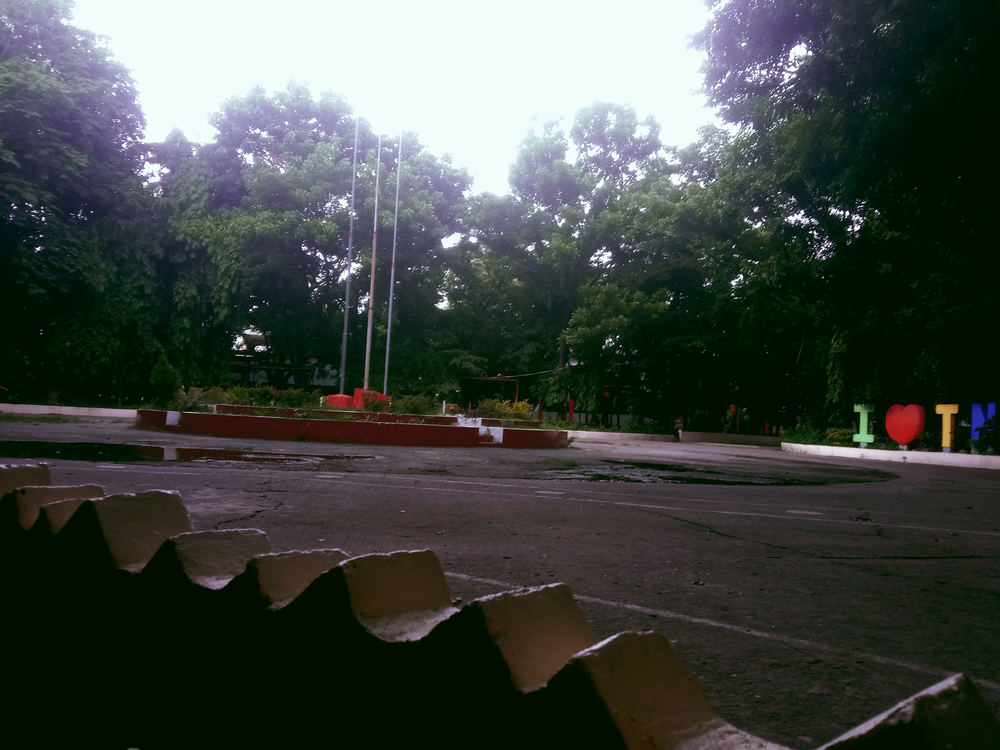
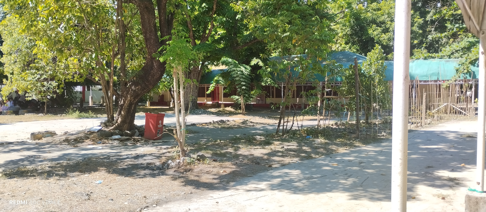
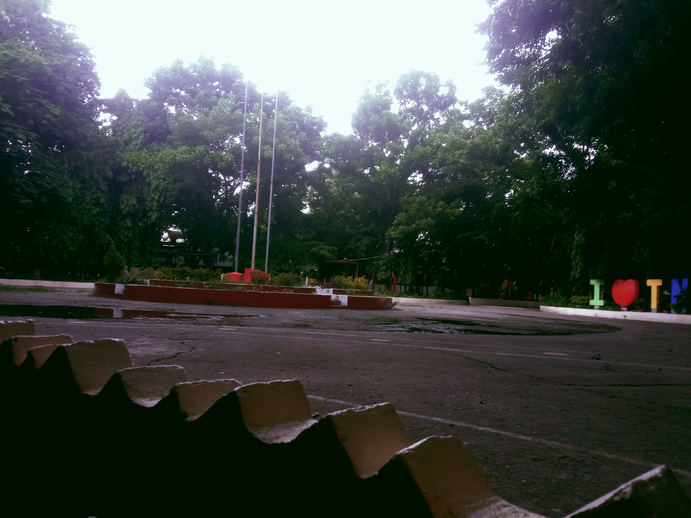

ABOUT TAGUIG NATIONAL HIGH SCHOOL



Welcome to Taguig National High School! Here, we provide a nurturing environment where students can thrive. Our dedicated faculty fosters a love of learning and challenges students to reach their full potential. We offer a diverse range of academic programs alongside extracurricular activities, equipping students with the skills and knowledge to become future leaders. TNHS is more than just a school - it's a community where dreams are built and futures take shape.

Taguig National High School (TNHS) is a beacon of education in the heart of Taguig City. Established in 1980, we boast a rich history of nurturing young minds and preparing them for success. We take pride in our tradition of academic excellence while embracing innovative teaching methods and the latest curriculum. At TNHS, we empower students to become well-rounded individuals, ready to contribute to a brighter future.

Taguig National High School stands as a testament to the power of education. We offer a quality public education, preparing students for college and beyond. Our curriculum is designed to equip students with critical thinking skills, strong work ethic, and a sense of social responsibility. At TNHS, you'll find a supportive environment that celebrates individuality and fosters a passion for lifelong learning. Join us and unlock your potential for success!


Find Us At
TAGUIG NATIONAL HIGH SCHOOL
A Legacy of Education
Taguig National High School (TNHS), formerly known as Taguig Municipal High School, boasts a rich history dating back to 1980. Here's a glimpse into its evolution:
Early Beginnings (1980-1982):
- Established on January 8, 1980, it was initially called Fort Bonifacio College Annex.
- It served as an extension campus for another school.

Transition and Growth (1982-1994):
- In 1982, it gained independence and became Taguig Municipal High School, catering to the growing educational needs of the community.
- The school likely experienced an increase in student population and faculty during this period.

Becoming Taguig National High School (1994-Present):
-
Republic Act 7991, passed in 1994 and 1995, formalized the establishment of a national high school in Taguig.
- With this act, Taguig Municipal High School officially transitioned to Taguig National High School, signifying its role as a key institution for public education in the city.
TNHS Today:
- TNHS remains a state-owned public high school, offering quality basic education from junior to senior high school.
- It implements the K to 12 program mandated by the Department of Education (DepEd).
- With a dedicated faculty and a commitment to excellence, TNHS continues to shape the future of Taguig's young minds.

This is a brief timeline of Taguig National High School's history. If you'd like to delve deeper, you can explore resources like the school's website (if available) or local government records for a more comprehensive understanding of its milestones and achievements.
Contact Me